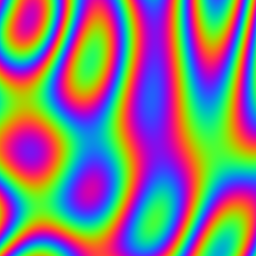
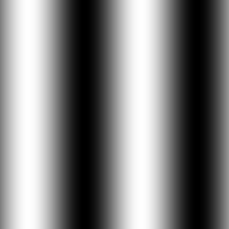
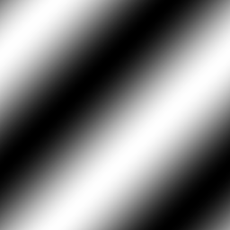
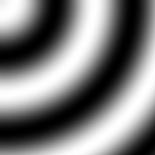
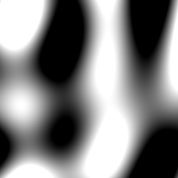

Plasma Effect
Plasma Effect is a cool effect from old demos rendered using sine and cosine functions. We can also animate it. Here, I created a script in python to render out plasma effect on a image file.
Here is how the plasma effect looks like.
To create the effect I setup Pillow (A Python library to work with images.) and do 2 for loops to render every pixel in the image.
from PIL import Image
from math import sin
from math import cos
from math import sqrt
#Define the size of the image.
size = 256, 256
myImage = Image.new('RGB',size,color=(255,0,0))
#pi constant required for sin functions
pi = 3.14159
#iterate through every pixel in image and perform the function.
for x in range(size[0]):
for y in range(size[1]):
r = 0
g = 0
b = 0
r = 127.5+r*127.5
g = 127.5+g*127.5
b = 127.5+b*127.5
myImage.putpixel((x,y), (int(r),int(g),int(b)))
#save the image
myImage.save("plasma.png")
#open the image in Image Viewer
myImage.show()
As the r, g, b values will range from -1 to 1 we multiply it by 127.5 and add 127.5 to bring those values in the range from 0 to 255 which is 32 bit color. Now we need to calculate a value "v".
#calculation of v
#choose a scaling value for the functions
scale = 1/20
#start with v = 0
v = 0
# here is our first function which creates vertical bars
v += sin(x*scale)
#r,g,b values all set to v for a greyscale image
r = v
g = v
b = v

Here is how the first function looks.
#calculation of v
#choose a scaling value for the functions
scale = 1/20
#start with v = 0
v = 0
# here is our second function which creates bars at 45 degree angle
v += sin(x+y*0.5*scale)
#r,g,b values all set to v for a greyscale image
r = v
g = v
b = v

Here is how the second function looks.
#calculation of v
#choose a scaling value for the functions
scale = 1/20
#start with v = 0
v = 0
# here is our third function which creates bars curved around the corner
v += sin(sqrt(scale*scale*(sx*sx+sy*sy)+1))
#r,g,b values all set to v for a greyscale image
r = v
g = v
b = v

Here is how the third function looks.
We can combine all of the functions by adding them up. We need to divide v by 3 to make them in range of -1 to 1.
This is the image when we combine all three functions together
We can take the sin of v multiplied by some constant values to get it look nice.
from PIL import Image
from math import sin
from math import cos
from math import sqrt
size = 256, 256
myImage = Image.new('RGB',size,color=(255,0,0))
pi = 3.14159
for x in range(size[0]):
for y in range(size[1]):
scale = 1/20
sx = x
sy = y
v = 0
v += sin(sx*scale)
v += sin((sx+sy)*0.5*scale)
v += sin(sqrt(scale*scale*(sx*sx+sy*sy)+1))
# Taking sin of v multiplied by constants , change these to change the colors.
r = sin(v*pi)
g = sin(v*pi+2*pi/3)
b = sin(v*pi+4*pi/3)
r = 127.5+r*127.5
g = 127.5+g*127.5
b = 127.5+b*127.5
myImage.putpixel((x,y), (int(r),int(g),int(b)))
myImage.save("plasma.png")
myImage.show()
This is the final script.
To animate the effect you can add the time to the sin functions.